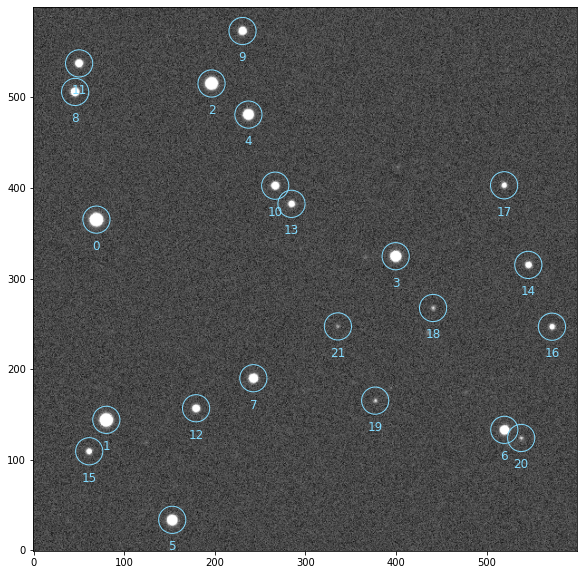
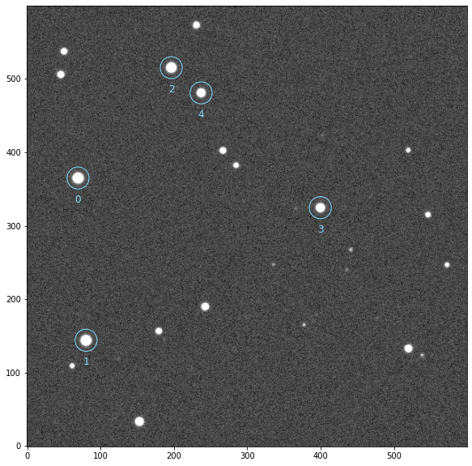
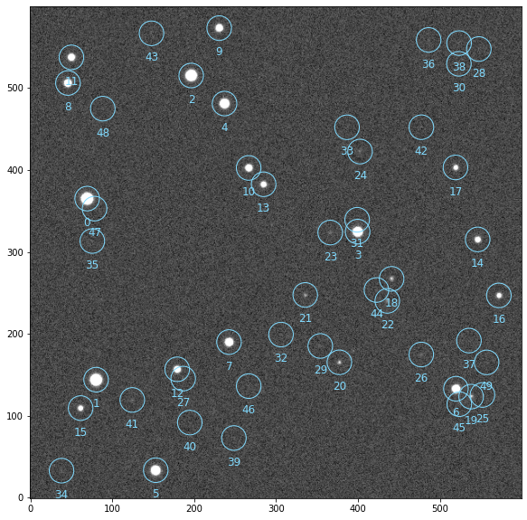

<!doctype html>
<html class="no-js">
  <head><meta charset="utf-8"/>
    <meta name="viewport" content="width=device-width,initial-scale=1"/>
    <meta name="color-scheme" content="light dark"><meta name="generator" content="Docutils 0.17.1: http://docutils.sourceforge.net/" />
<link rel="index" title="Index" href="../../genindex.html" /><link rel="search" title="Search" href="../../search.html" /><link rel="next" title="SEDetection" href="prose.blocks.detection.SEDetection.html" /><link rel="prev" title="Blocks" href="../blocks.html" />

    <meta name="generator" content="sphinx-4.4.0, furo 2022.03.04"/>
        <title>SegmentedPeaks - prose</title>
      <link rel="stylesheet" type="text/css" href="../../_static/pygments.css" />
    <link rel="stylesheet" type="text/css" href="../../_static/styles/furo.css?digest=935aa2abcc5c1da4283d1dc201fb1f0add16d23a" />
    <link rel="stylesheet" type="text/css" href="../../_static/copybutton.css" />
    <link rel="stylesheet" type="text/css" href="../../_static/jupyter-sphinx.css" />
    <link rel="stylesheet" type="text/css" href="../../_static/thebelab.css" />
    <link rel="stylesheet" type="text/css" href="../../_static/styles/furo-extensions.css?digest=25ceb02ed1c46dc30f2321ff83e92799f69dfdb9" />
    <link rel="stylesheet" type="text/css" href="../../_static/custom.css" />
    
    


<style>
  body {
    --color-code-background: #f8f8f8;
  --color-code-foreground: black;
  
  }
  @media not print {
    body[data-theme="dark"] {
      --color-code-background: #202020;
  --color-code-foreground: #d0d0d0;
  
    }
    @media (prefers-color-scheme: dark) {
      body:not([data-theme="light"]) {
        --color-code-background: #202020;
  --color-code-foreground: #d0d0d0;
  
      }
    }
  }
</style></head>
  <body>
    <script>
      document.body.dataset.theme = localStorage.getItem("theme") || "auto";
    </script>
    
<svg xmlns="http://www.w3.org/2000/svg" style="display: none;">
  <symbol id="svg-toc" viewBox="0 0 24 24">
    <title>Contents</title>
    <svg stroke="currentColor" fill="currentColor" stroke-width="0" viewBox="0 0 1024 1024">
      <path d="M408 442h480c4.4 0 8-3.6 8-8v-56c0-4.4-3.6-8-8-8H408c-4.4 0-8 3.6-8 8v56c0 4.4 3.6 8 8 8zm-8 204c0 4.4 3.6 8 8 8h480c4.4 0 8-3.6 8-8v-56c0-4.4-3.6-8-8-8H408c-4.4 0-8 3.6-8 8v56zm504-486H120c-4.4 0-8 3.6-8 8v56c0 4.4 3.6 8 8 8h784c4.4 0 8-3.6 8-8v-56c0-4.4-3.6-8-8-8zm0 632H120c-4.4 0-8 3.6-8 8v56c0 4.4 3.6 8 8 8h784c4.4 0 8-3.6 8-8v-56c0-4.4-3.6-8-8-8zM115.4 518.9L271.7 642c5.8 4.6 14.4.5 14.4-6.9V388.9c0-7.4-8.5-11.5-14.4-6.9L115.4 505.1a8.74 8.74 0 0 0 0 13.8z"/>
    </svg>
  </symbol>
  <symbol id="svg-menu" viewBox="0 0 24 24">
    <title>Menu</title>
    <svg xmlns="http://www.w3.org/2000/svg" viewBox="0 0 24 24" fill="none" stroke="currentColor"
      stroke-width="2" stroke-linecap="round" stroke-linejoin="round" class="feather-menu">
      <line x1="3" y1="12" x2="21" y2="12"></line>
      <line x1="3" y1="6" x2="21" y2="6"></line>
      <line x1="3" y1="18" x2="21" y2="18"></line>
    </svg>
  </symbol>
  <symbol id="svg-arrow-right" viewBox="0 0 24 24">
    <title>Expand</title>
    <svg xmlns="http://www.w3.org/2000/svg" viewBox="0 0 24 24" fill="none" stroke="currentColor"
      stroke-width="2" stroke-linecap="round" stroke-linejoin="round" class="feather-chevron-right">
      <polyline points="9 18 15 12 9 6"></polyline>
    </svg>
  </symbol>
  <symbol id="svg-sun" viewBox="0 0 24 24">
    <title>Light mode</title>
    <svg xmlns="http://www.w3.org/2000/svg" viewBox="0 0 24 24" fill="none" stroke="currentColor"
      stroke-width="1.5" stroke-linecap="round" stroke-linejoin="round" class="feather-sun">
      <circle cx="12" cy="12" r="5"></circle>
      <line x1="12" y1="1" x2="12" y2="3"></line>
      <line x1="12" y1="21" x2="12" y2="23"></line>
      <line x1="4.22" y1="4.22" x2="5.64" y2="5.64"></line>
      <line x1="18.36" y1="18.36" x2="19.78" y2="19.78"></line>
      <line x1="1" y1="12" x2="3" y2="12"></line>
      <line x1="21" y1="12" x2="23" y2="12"></line>
      <line x1="4.22" y1="19.78" x2="5.64" y2="18.36"></line>
      <line x1="18.36" y1="5.64" x2="19.78" y2="4.22"></line>
    </svg>
  </symbol>
  <symbol id="svg-moon" viewBox="0 0 24 24">
    <title>Dark mode</title>
    <svg xmlns="http://www.w3.org/2000/svg" viewBox="0 0 24 24" fill="none" stroke="currentColor"
      stroke-width="1.5" stroke-linecap="round" stroke-linejoin="round" class="icon-tabler-moon">
      <path stroke="none" d="M0 0h24v24H0z" fill="none" />
      <path d="M12 3c.132 0 .263 0 .393 0a7.5 7.5 0 0 0 7.92 12.446a9 9 0 1 1 -8.313 -12.454z" />
    </svg>
  </symbol>
  <symbol id="svg-sun-half" viewBox="0 0 24 24">
    <title>Auto light/dark mode</title>
    <svg xmlns="http://www.w3.org/2000/svg" viewBox="0 0 24 24" fill="none" stroke="currentColor"
      stroke-width="1.5" stroke-linecap="round" stroke-linejoin="round" class="icon-tabler-shadow">
      <path stroke="none" d="M0 0h24v24H0z" fill="none"/>
      <circle cx="12" cy="12" r="9" />
      <path d="M13 12h5" />
      <path d="M13 15h4" />
      <path d="M13 18h1" />
      <path d="M13 9h4" />
      <path d="M13 6h1" />
    </svg>
  </symbol>
</svg>

<input type="checkbox" class="sidebar-toggle" name="__navigation" id="__navigation">
<input type="checkbox" class="sidebar-toggle" name="__toc" id="__toc">
<label class="overlay sidebar-overlay" for="__navigation">
  <div class="visually-hidden">Hide navigation sidebar</div>
</label>
<label class="overlay toc-overlay" for="__toc">
  <div class="visually-hidden">Hide table of contents sidebar</div>
</label>


<div class="page">
  <header class="mobile-header">
    <div class="header-left">
      <label class="nav-overlay-icon" for="__navigation">
        <div class="visually-hidden">Toggle site navigation sidebar</div>
        <i class="icon"><svg><use href="#svg-menu"></use></svg></i>
      </label>
    </div>
    <div class="header-center">
      <a href="../../index.html"><div class="brand">prose</div></a>
    </div>
    <div class="header-right">
      <div class="theme-toggle-container theme-toggle-header">
        <button class="theme-toggle">
          <div class="visually-hidden">Toggle Light / Dark / Auto color theme</div>
          <svg class="theme-icon-when-auto"><use href="#svg-sun-half"></use></svg>
          <svg class="theme-icon-when-dark"><use href="#svg-moon"></use></svg>
          <svg class="theme-icon-when-light"><use href="#svg-sun"></use></svg>
        </button>
      </div>
      <label class="toc-overlay-icon toc-header-icon no-toc" for="__toc">
        <div class="visually-hidden">Toggle table of contents sidebar</div>
        <i class="icon"><svg><use href="#svg-toc"></use></svg></i>
      </label>
    </div>
  </header>
  <aside class="sidebar-drawer">
    <div class="sidebar-container">
      
      <div class="sidebar-sticky"><a class="sidebar-brand" href="../../index.html">
  
  
  <span class="sidebar-brand-text">prose</span>
  
</a><form class="sidebar-search-container" method="get" action="../../search.html" role="search">
  <input class="sidebar-search" placeholder=Search name="q" aria-label="Search">
  <input type="hidden" name="check_keywords" value="yes">
  <input type="hidden" name="area" value="default">
</form>
<div id="searchbox"></div><div class="sidebar-scroll"><div class="sidebar-tree">
  <p class="caption" role="heading"><span class="caption-text">References</span></p>
<ul class="current">
<li class="toctree-l1"><a class="reference internal" href="../installation.html">Installation</a></li>
<li class="toctree-l1"><a class="reference internal" href="../../notebooks/quickstart.html">Quickstart</a></li>
<li class="toctree-l1"><a class="reference internal" href="../core.html">What is a pipeline?</a></li>
<li class="toctree-l1 current has-children"><a class="reference internal" href="../blocks.html">Blocks</a><input checked="" class="toctree-checkbox" id="toctree-checkbox-1" name="toctree-checkbox-1" role="switch" type="checkbox"/><label for="toctree-checkbox-1"><div class="visually-hidden">Toggle child pages in navigation</div><i class="icon"><svg><use href="#svg-arrow-right"></use></svg></i></label><ul class="current">
<li class="toctree-l2 current current-page"><a class="current reference internal" href="#">SegmentedPeaks</a></li>
<li class="toctree-l2"><a class="reference internal" href="prose.blocks.detection.SEDetection.html">SEDetection</a></li>
<li class="toctree-l2"><a class="reference internal" href="prose.blocks.detection.DAOFindStars.html">DAOFindStars</a></li>
<li class="toctree-l2"><a class="reference internal" href="prose.blocks.psf.Cutouts.html">Cutouts</a></li>
<li class="toctree-l2"><a class="reference internal" href="prose.blocks.psf.MedianPSF.html">MedianPSF</a></li>
<li class="toctree-l2"><a class="reference internal" href="prose.blocks.psf.FWHM.html">FWHM</a></li>
<li class="toctree-l2"><a class="reference internal" href="prose.blocks.psf.Gaussian2D.html">Gaussian2D</a></li>
<li class="toctree-l2"><a class="reference internal" href="prose.blocks.psf.Moffat2D.html">Moffat2D</a></li>
<li class="toctree-l2"><a class="reference internal" href="prose.blocks.psf.FastGaussian.html">FastGaussian</a></li>
<li class="toctree-l2"><a class="reference internal" href="prose.blocks.XYShift.html">XYShift</a></li>
<li class="toctree-l2"><a class="reference internal" href="prose.blocks.Twirl.html">Twirl</a></li>
<li class="toctree-l2"><a class="reference internal" href="prose.blocks.AffineTransform.html">AffineTransform</a></li>
<li class="toctree-l2"><a class="reference internal" href="prose.blocks.Cutout2D.html">Cutout2D</a></li>
<li class="toctree-l2"><a class="reference internal" href="prose.blocks.centroids.COM.html">COM</a></li>
<li class="toctree-l2"><a class="reference internal" href="prose.blocks.centroids.Quadratic.html">Quadratic</a></li>
<li class="toctree-l2"><a class="reference internal" href="prose.blocks.centroids.Gaussian2D.html">Gaussian2D</a></li>
<li class="toctree-l2"><a class="reference internal" href="prose.blocks.centroids.BalletCentroid.html">BalletCentroid</a></li>
<li class="toctree-l2"><a class="reference internal" href="prose.blocks.PhotutilsAperturePhotometry.html">PhotutilsAperturePhotometry</a></li>
<li class="toctree-l2"><a class="reference internal" href="prose.blocks.PhotutilsPSFPhotometry.html">PhotutilsPSFPhotometry</a></li>
<li class="toctree-l2"><a class="reference internal" href="prose.blocks.SEAperturePhotometry.html">SEAperturePhotometry</a></li>
<li class="toctree-l2"><a class="reference internal" href="prose.blocks.Calibration.html">Calibration</a></li>
<li class="toctree-l2"><a class="reference internal" href="prose.blocks.Cutouts.html">Cutouts</a></li>
<li class="toctree-l2"><a class="reference internal" href="prose.blocks.Flip.html">Flip</a></li>
<li class="toctree-l2"><a class="reference internal" href="prose.blocks.ImageBuffer.html">ImageBuffer</a></li>
<li class="toctree-l2"><a class="reference internal" href="prose.blocks.Pass.html">Pass</a></li>
<li class="toctree-l2"><a class="reference internal" href="prose.blocks.SaveReduced.html">SaveReduced</a></li>
<li class="toctree-l2"><a class="reference internal" href="prose.blocks.Set.html">Set</a></li>
<li class="toctree-l2"><a class="reference internal" href="prose.blocks.Stack.html">Stack</a></li>
<li class="toctree-l2"><a class="reference internal" href="prose.blocks.Trim.html">Trim</a></li>
<li class="toctree-l2"><a class="reference internal" href="prose.blocks.XArray.html">XArray</a></li>
</ul>
</li>
<li class="toctree-l1 has-children"><a class="reference internal" href="../api.html">API</a><input class="toctree-checkbox" id="toctree-checkbox-2" name="toctree-checkbox-2" role="switch" type="checkbox"/><label for="toctree-checkbox-2"><div class="visually-hidden">Toggle child pages in navigation</div><i class="icon"><svg><use href="#svg-arrow-right"></use></svg></i></label><ul>
<li class="toctree-l2"><a class="reference internal" href="prose.Image.html">Image</a></li>
<li class="toctree-l2"><a class="reference internal" href="prose.Block.html">Block</a></li>
<li class="toctree-l2"><a class="reference internal" href="prose.Sequence.html">Sequence</a></li>
<li class="toctree-l2"><a class="reference internal" href="prose.Telescope.html">Telescope</a></li>
<li class="toctree-l2"><a class="reference internal" href="prose.FitsManager.html">FitsManager</a></li>
<li class="toctree-l2"><a class="reference internal" href="prose.Observation.html">Observation</a></li>
<li class="toctree-l2"><a class="reference internal" href="prose.pipeline.Calibration.html">Calibration</a></li>
<li class="toctree-l2"><a class="reference internal" href="prose.pipeline.AperturePhotometry.html">AperturePhotometry</a></li>
<li class="toctree-l2"><a class="reference internal" href="prose.fluxes.ApertureFluxes.html">ApertureFluxes</a></li>
</ul>
</li>
<li class="toctree-l1"><a class="reference internal" href="../../notebooks/acknowledgment.html">Acknowledgement</a></li>
</ul>
<p class="caption" role="heading"><span class="caption-text">Tutorials</span></p>
<ul>
<li class="toctree-l1"><a class="reference internal" href="../../notebooks/fits_manager.html">Fits manager</a></li>
<li class="toctree-l1"><a class="reference internal" href="../../notebooks/photometry.html">Photometry ✨</a></li>
<li class="toctree-l1"><a class="reference internal" href="../../notebooks/reports.html">Reports</a></li>
<li class="toctree-l1"><a class="reference internal" href="../../notebooks/custom_block.html">Custom block</a></li>
<li class="toctree-l1"><a class="reference internal" href="../../notebooks/modeling.html">Modeling</a></li>
<li class="toctree-l1"><a class="reference internal" href="../../notebooks/archival.html">Archival images 🌌</a></li>
<li class="toctree-l1"><a class="reference internal" href="../../notebooks/catalogs.html">Catalogs &amp; Plate solving</a></li>
</ul>
<p class="caption" role="heading"><span class="caption-text">Case studies 🔭</span></p>
<ul>
<li class="toctree-l1"><a class="reference internal" href="../../notebooks/diagnostic_video.html">Diagnostic video</a></li>
<li class="toctree-l1"><a class="reference internal" href="../../notebooks/hiaka_occultation.html">Hi’iaka occultation</a></li>
</ul>
<p class="caption" role="heading"><span class="caption-text">Notes</span></p>
<ul>
<li class="toctree-l1"><a class="reference internal" href="../../notebooks/phot.html">Data products: <code class="docutils literal notranslate"><span class="pre">.phot</span></code></a></li>
<li class="toctree-l1"><a class="reference internal" href="../../notebooks/extra.html">Useful tips</a></li>
</ul>

</div>
</div>

      </div>
      
    </div>
  </aside>
  <div class="main">
    <div class="content">
      <div class="article-container">
        <a href="#" class="back-to-top muted-link">
          <svg xmlns="http://www.w3.org/2000/svg" viewBox="0 0 24 24">
            <path d="M13 20h-2V8l-5.5 5.5-1.42-1.42L12 4.16l7.92 7.92-1.42 1.42L13 8v12z"></path>
          </svg>
          <span>Back to top</span>
        </a>
        <div class="content-icon-container"><div class="theme-toggle-container theme-toggle-content">
            <button class="theme-toggle">
              <div class="visually-hidden">Toggle Light / Dark / Auto color theme</div>
              <svg class="theme-icon-when-auto"><use href="#svg-sun-half"></use></svg>
              <svg class="theme-icon-when-dark"><use href="#svg-moon"></use></svg>
              <svg class="theme-icon-when-light"><use href="#svg-sun"></use></svg>
            </button>
          </div>
          <label class="toc-overlay-icon toc-content-icon no-toc" for="__toc">
            <div class="visually-hidden">Toggle table of contents sidebar</div>
            <i class="icon"><svg><use href="#svg-toc"></use></svg></i>
          </label>
        </div>
        <article role="main">
          <section id="segmentedpeaks">
<h1>SegmentedPeaks<a class="headerlink" href="#segmentedpeaks" title="Permalink to this headline">#</a></h1>
<dl class="py class">
<dt class="sig sig-object py" id="prose.blocks.detection.SegmentedPeaks">
<em class="property"><span class="pre">class</span><span class="w"> </span></em><span class="sig-prename descclassname"><span class="pre">prose.blocks.detection.</span></span><span class="sig-name descname"><span class="pre">SegmentedPeaks</span></span><span class="sig-paren">(</span><em class="sig-param"><span class="o"><span class="pre">*</span></span><span class="n"><span class="pre">args</span></span></em>, <em class="sig-param"><span class="o"><span class="pre">**</span></span><span class="n"><span class="pre">kwargs</span></span></em><span class="sig-paren">)</span><a class="headerlink" href="#prose.blocks.detection.SegmentedPeaks" title="Permalink to this definition">#</a></dt>
<dd><p>Stars detection based on image segmentation.</p>
<p><span class="blockwrite">writes</span> <code class="docutils literal notranslate"><span class="pre">Image.stars_coords</span></code> and <code class="docutils literal notranslate"><span class="pre">Image.peaks</span></code></p>
<dl class="field-list simple">
<dt class="field-odd">Parameters</dt>
<dd class="field-odd"><ul class="simple">
<li><p><strong>unit_euler</strong> (<em>bool</em><em>, </em><em>optional</em>) – whether to impose the euler_number of the regions property to be one, by default False</p></li>
<li><p><strong>threshold</strong> (<em>int</em><em>, </em><em>optional</em>) – empirical stars detection threshold, by default 4</p></li>
<li><p><strong>min_area</strong> (<em>int</em><em>, </em><em>optional</em>) – minimum area (i.e. pixels above threshold) for a bright region to be considered a star, by default 3</p></li>
<li><p><strong>minor_length</strong> (<em>int</em><em>, </em><em>optional</em>) – minimum lenght (defined as the region axis_minor_length) for a bright region to be considered a star, by default 2</p></li>
<li><p><strong>reference</strong> (<a class="reference internal" href="prose.Image.html#prose.Image" title="prose.Image"><em>Image</em></a><em>, </em><em>optional</em>) – a reference image on which to auto-compute the threshold, by default None. If provided, also provided n_stars that will serve as the target number of stars to detect</p></li>
<li><p><strong>auto</strong> (<em>bool</em><em>, </em><em>optional</em>) – auto-compute threshold for each image, by default False (This is very slow and should be True only outside of sequences)</p></li>
<li><p><strong>n_stars</strong> (<em>int</em><em>, </em><em>optional</em>) – number of stars to detect/keep, by default None (i.e. no constraint)</p></li>
<li><p><strong>sort</strong> (<em>bool</em><em>, </em><em>optional</em>) – whether to sort stars coordinates from the highest to the lowest intensity, by default True</p></li>
<li><p><strong>min_separation</strong> (<em>float</em><em>, </em><em>optional</em>) – minimum separation between sources, by default 5.0. If less than that, close sources are merged</p></li>
<li><p><strong>verbose</strong> (<em>bool</em><em>, </em><em>optional</em>) – wether the block should be verbose, by default False</p></li>
</ul>
</dd>
</dl>
<p class="rubric">Example</p>
<div class="jupyter_cell jupyter_container docutils container">
<div class="cell_input code_cell docutils container">
<div class="highlight-default notranslate"><div class="highlight"><pre><span></span><span class="kn">from</span> <span class="nn">prose.tutorials</span> <span class="kn">import</span> <span class="n">example_image</span>

<span class="n">image</span> <span class="o">=</span> <span class="n">example_image</span><span class="p">()</span>
</pre></div>
</div>
</div>
<div class="cell_output docutils container">
</div>
</div>
<p>The simplest way to run this detection block is</p>
<div class="jupyter_cell jupyter_container docutils container">
<div class="cell_input code_cell docutils container">
<div class="highlight-default notranslate"><div class="highlight"><pre><span></span><span class="kn">from</span> <span class="nn">prose.blocks</span> <span class="kn">import</span> <span class="n">SegmentedPeaks</span>

<span class="n">image</span> <span class="o">=</span> <span class="n">SegmentedPeaks</span><span class="p">()(</span><span class="n">image</span><span class="p">)</span>
<span class="n">image</span><span class="o">.</span><span class="n">show</span><span class="p">()</span>
</pre></div>
</div>
</div>
<div class="cell_output docutils container">
<div class="output text_plain highlight-none notranslate"><div class="highlight"><pre><span></span>&lt;AxesSubplot:&gt;
</pre></div>
</div>

</div>
</div>
<p>The number of stars can be easily constrained with <code class="docutils literal notranslate"><span class="pre">n_stars</span></code></p>
<div class="jupyter_cell jupyter_container docutils container">
<div class="cell_input code_cell docutils container">
<div class="highlight-default notranslate"><div class="highlight"><pre><span></span><span class="n">image</span> <span class="o">=</span> <span class="n">SegmentedPeaks</span><span class="p">(</span><span class="n">n_stars</span><span class="o">=</span><span class="mi">5</span><span class="p">)(</span><span class="n">image</span><span class="p">)</span>
<span class="n">image</span><span class="o">.</span><span class="n">show</span><span class="p">()</span>
</pre></div>
</div>
</div>
<div class="cell_output docutils container">
<div class="output text_plain highlight-none notranslate"><div class="highlight"><pre><span></span>&lt;AxesSubplot:&gt;
</pre></div>
</div>

</div>
</div>
<p>The algorithm relies on the <code class="docutils literal notranslate"><span class="pre">threshold</span></code> parameter that can be
auto-computed to reach a desired number of stars</p>
<div class="jupyter_cell jupyter_container docutils container">
<div class="cell_input code_cell docutils container">
<div class="highlight-default notranslate"><div class="highlight"><pre><span></span><span class="n">image</span> <span class="o">=</span> <span class="n">SegmentedPeaks</span><span class="p">(</span><span class="n">n_stars</span><span class="o">=</span><span class="mi">50</span><span class="p">,</span> <span class="n">auto</span><span class="o">=</span><span class="kc">True</span><span class="p">,</span> <span class="n">verbose</span><span class="o">=</span><span class="kc">True</span><span class="p">)(</span><span class="n">image</span><span class="p">)</span>
<span class="n">image</span><span class="o">.</span><span class="n">show</span><span class="p">()</span>
</pre></div>
</div>
</div>
<div class="cell_output docutils container">
<div class="output stream highlight-none notranslate"><div class="highlight"><pre><span></span>INFO SegmentedPeaks threshold optimisation ...
</pre></div>
</div>
<div class="output stream highlight-none notranslate"><div class="highlight"><pre><span></span>INFO threshold = 1.30
</pre></div>
</div>
<div class="output text_plain highlight-none notranslate"><div class="highlight"><pre><span></span>&lt;AxesSubplot:&gt;
</pre></div>
</div>

</div>
</div>
<p>however threshold optimisation is slow. When processing multiple images
(in a <code class="docutils literal notranslate"><span class="pre">Sequence</span></code> for example) you can provide a reference image on
which the threshold can be optimized once</p>
<div class="jupyter_cell jupyter_container docutils container">
<div class="cell_input code_cell docutils container">
<div class="highlight-default notranslate"><div class="highlight"><pre><span></span><span class="kn">from</span> <span class="nn">tqdm.auto</span> <span class="kn">import</span> <span class="n">tqdm</span>

<span class="nb">print</span><span class="p">(</span><span class="s2">"threshold optimisation for multiple images"</span><span class="p">)</span>
<span class="c1"># -------------------------------------------------</span>
<span class="k">for</span> <span class="n">_</span> <span class="ow">in</span> <span class="n">tqdm</span><span class="p">(</span><span class="nb">range</span><span class="p">(</span><span class="mi">3</span><span class="p">)):</span>
    <span class="n">SegmentedPeaks</span><span class="p">(</span><span class="n">n_stars</span><span class="o">=</span><span class="mi">15</span><span class="p">,</span> <span class="n">auto</span><span class="o">=</span><span class="kc">True</span><span class="p">)(</span><span class="n">image</span><span class="p">)</span>


<span class="nb">print</span><span class="p">(</span><span class="s2">"threshold optimisation once"</span><span class="p">)</span>
<span class="c1"># ----------------------------------</span>
<span class="n">detection</span> <span class="o">=</span> <span class="n">SegmentedPeaks</span><span class="p">(</span><span class="n">n_stars</span><span class="o">=</span><span class="mi">15</span><span class="p">,</span> <span class="n">reference</span><span class="o">=</span><span class="n">image</span><span class="p">)</span>

<span class="k">for</span> <span class="n">_</span> <span class="ow">in</span> <span class="n">tqdm</span><span class="p">(</span><span class="nb">range</span><span class="p">(</span><span class="mi">3</span><span class="p">)):</span>
    <span class="n">detection</span><span class="p">(</span><span class="n">image</span><span class="p">)</span>
</pre></div>
</div>
</div>
<div class="cell_output docutils container">
<div class="output stream highlight-none notranslate"><div class="highlight"><pre><span></span>threshold optimisation for multiple images
</pre></div>
</div>
<script type="application/vnd.jupyter.widget-view+json">
{"version_major": 2, "version_minor": 0, "model_id": "4633d4a7dc40426a8ce62a502ae62c6f"}
</script><div class="output stream highlight-none notranslate"><div class="highlight"><pre><span></span>threshold optimisation once
</pre></div>
</div>
<script type="application/vnd.jupyter.widget-view+json">
{"version_major": 2, "version_minor": 0, "model_id": "b7b041b4099c49c4840fbfb4eb8e27c9"}
</script></div>
</div>
</dd></dl>
</section>
<script type="application/vnd.jupyter.widget-state+json">
{"state": {"5350db35c9fb4b27b8c942df4416c7a8": {"model_name": "LayoutModel", "model_module": "@jupyter-widgets/base", "model_module_version": "1.2.0", "state": {"_model_module": "@jupyter-widgets/base", "_model_module_version": "1.2.0", "_model_name": "LayoutModel", "_view_count": null, "_view_module": "@jupyter-widgets/base", "_view_module_version": "1.2.0", "_view_name": "LayoutView", "align_content": null, "align_items": null, "align_self": null, "border": null, "bottom": null, "display": null, "flex": null, "flex_flow": null, "grid_area": null, "grid_auto_columns": null, "grid_auto_flow": null, "grid_auto_rows": null, "grid_column": null, "grid_gap": null, "grid_row": null, "grid_template_areas": null, "grid_template_columns": null, "grid_template_rows": null, "height": null, "justify_content": null, "justify_items": null, "left": null, "margin": null, "max_height": null, "max_width": null, "min_height": null, "min_width": null, "object_fit": null, "object_position": null, "order": null, "overflow": null, "overflow_x": null, "overflow_y": null, "padding": null, "right": null, "top": null, "visibility": null, "width": null}}, "03d8094281ba4843acc082357a9bbdaf": {"model_name": "ProgressStyleModel", "model_module": "@jupyter-widgets/controls", "model_module_version": "1.5.0", "state": {"_model_module": "@jupyter-widgets/controls", "_model_module_version": "1.5.0", "_model_name": "ProgressStyleModel", "_view_count": null, "_view_module": "@jupyter-widgets/base", "_view_module_version": "1.2.0", "_view_name": "StyleView", "bar_color": null, "description_width": ""}}, "3141486c8a344cbbacaf48185e693207": {"model_name": "FloatProgressModel", "model_module": "@jupyter-widgets/controls", "model_module_version": "1.5.0", "state": {"_dom_classes": [], "_model_module": "@jupyter-widgets/controls", "_model_module_version": "1.5.0", "_model_name": "FloatProgressModel", "_view_count": null, "_view_module": "@jupyter-widgets/controls", "_view_module_version": "1.5.0", "_view_name": "ProgressView", "bar_style": "success", "description": "", "description_tooltip": null, "layout": "IPY_MODEL_5350db35c9fb4b27b8c942df4416c7a8", "max": 3.0, "min": 0.0, "orientation": "horizontal", "style": "IPY_MODEL_03d8094281ba4843acc082357a9bbdaf", "value": 3.0}}, "78424610e59e4f6fbd0344549c69e6c6": {"model_name": "LayoutModel", "model_module": "@jupyter-widgets/base", "model_module_version": "1.2.0", "state": {"_model_module": "@jupyter-widgets/base", "_model_module_version": "1.2.0", "_model_name": "LayoutModel", "_view_count": null, "_view_module": "@jupyter-widgets/base", "_view_module_version": "1.2.0", "_view_name": "LayoutView", "align_content": null, "align_items": null, "align_self": null, "border": null, "bottom": null, "display": null, "flex": null, "flex_flow": null, "grid_area": null, "grid_auto_columns": null, "grid_auto_flow": null, "grid_auto_rows": null, "grid_column": null, "grid_gap": null, "grid_row": null, "grid_template_areas": null, "grid_template_columns": null, "grid_template_rows": null, "height": null, "justify_content": null, "justify_items": null, "left": null, "margin": null, "max_height": null, "max_width": null, "min_height": null, "min_width": null, "object_fit": null, "object_position": null, "order": null, "overflow": null, "overflow_x": null, "overflow_y": null, "padding": null, "right": null, "top": null, "visibility": null, "width": null}}, "4bb0104287e24700b29357c26190d13d": {"model_name": "DescriptionStyleModel", "model_module": "@jupyter-widgets/controls", "model_module_version": "1.5.0", "state": {"_model_module": "@jupyter-widgets/controls", "_model_module_version": "1.5.0", "_model_name": "DescriptionStyleModel", "_view_count": null, "_view_module": "@jupyter-widgets/base", "_view_module_version": "1.2.0", "_view_name": "StyleView", "description_width": ""}}, "6c66cb66f58341d1973165261681a59f": {"model_name": "HTMLModel", "model_module": "@jupyter-widgets/controls", "model_module_version": "1.5.0", "state": {"_dom_classes": [], "_model_module": "@jupyter-widgets/controls", "_model_module_version": "1.5.0", "_model_name": "HTMLModel", "_view_count": null, "_view_module": "@jupyter-widgets/controls", "_view_module_version": "1.5.0", "_view_name": "HTMLView", "description": "", "description_tooltip": null, "layout": "IPY_MODEL_78424610e59e4f6fbd0344549c69e6c6", "placeholder": "\u200b", "style": "IPY_MODEL_4bb0104287e24700b29357c26190d13d", "value": "100%"}}, "7476a768c4b54b1886d7c12714129862": {"model_name": "LayoutModel", "model_module": "@jupyter-widgets/base", "model_module_version": "1.2.0", "state": {"_model_module": "@jupyter-widgets/base", "_model_module_version": "1.2.0", "_model_name": "LayoutModel", "_view_count": null, "_view_module": "@jupyter-widgets/base", "_view_module_version": "1.2.0", "_view_name": "LayoutView", "align_content": null, "align_items": null, "align_self": null, "border": null, "bottom": null, "display": null, "flex": null, "flex_flow": null, "grid_area": null, "grid_auto_columns": null, "grid_auto_flow": null, "grid_auto_rows": null, "grid_column": null, "grid_gap": null, "grid_row": null, "grid_template_areas": null, "grid_template_columns": null, "grid_template_rows": null, "height": null, "justify_content": null, "justify_items": null, "left": null, "margin": null, "max_height": null, "max_width": null, "min_height": null, "min_width": null, "object_fit": null, "object_position": null, "order": null, "overflow": null, "overflow_x": null, "overflow_y": null, "padding": null, "right": null, "top": null, "visibility": null, "width": null}}, "2e27b6daeebf4518a3fa57cb64246aa5": {"model_name": "DescriptionStyleModel", "model_module": "@jupyter-widgets/controls", "model_module_version": "1.5.0", "state": {"_model_module": "@jupyter-widgets/controls", "_model_module_version": "1.5.0", "_model_name": "DescriptionStyleModel", "_view_count": null, "_view_module": "@jupyter-widgets/base", "_view_module_version": "1.2.0", "_view_name": "StyleView", "description_width": ""}}, "5f5c7b03acbf46259838a9aeec85844d": {"model_name": "HTMLModel", "model_module": "@jupyter-widgets/controls", "model_module_version": "1.5.0", "state": {"_dom_classes": [], "_model_module": "@jupyter-widgets/controls", "_model_module_version": "1.5.0", "_model_name": "HTMLModel", "_view_count": null, "_view_module": "@jupyter-widgets/controls", "_view_module_version": "1.5.0", "_view_name": "HTMLView", "description": "", "description_tooltip": null, "layout": "IPY_MODEL_7476a768c4b54b1886d7c12714129862", "placeholder": "\u200b", "style": "IPY_MODEL_2e27b6daeebf4518a3fa57cb64246aa5", "value": " 3/3 [00:01&lt;00:00,  1.86it/s]"}}, "89e96e8ca1074890a0ef6fc9b59ca9dd": {"model_name": "LayoutModel", "model_module": "@jupyter-widgets/base", "model_module_version": "1.2.0", "state": {"_model_module": "@jupyter-widgets/base", "_model_module_version": "1.2.0", "_model_name": "LayoutModel", "_view_count": null, "_view_module": "@jupyter-widgets/base", "_view_module_version": "1.2.0", "_view_name": "LayoutView", "align_content": null, "align_items": null, "align_self": null, "border": null, "bottom": null, "display": null, "flex": null, "flex_flow": null, "grid_area": null, "grid_auto_columns": null, "grid_auto_flow": null, "grid_auto_rows": null, "grid_column": null, "grid_gap": null, "grid_row": null, "grid_template_areas": null, "grid_template_columns": null, "grid_template_rows": null, "height": null, "justify_content": null, "justify_items": null, "left": null, "margin": null, "max_height": null, "max_width": null, "min_height": null, "min_width": null, "object_fit": null, "object_position": null, "order": null, "overflow": null, "overflow_x": null, "overflow_y": null, "padding": null, "right": null, "top": null, "visibility": null, "width": null}}, "4633d4a7dc40426a8ce62a502ae62c6f": {"model_name": "HBoxModel", "model_module": "@jupyter-widgets/controls", "model_module_version": "1.5.0", "state": {"_dom_classes": [], "_model_module": "@jupyter-widgets/controls", "_model_module_version": "1.5.0", "_model_name": "HBoxModel", "_view_count": null, "_view_module": "@jupyter-widgets/controls", "_view_module_version": "1.5.0", "_view_name": "HBoxView", "box_style": "", "children": ["IPY_MODEL_6c66cb66f58341d1973165261681a59f", "IPY_MODEL_3141486c8a344cbbacaf48185e693207", "IPY_MODEL_5f5c7b03acbf46259838a9aeec85844d"], "layout": "IPY_MODEL_89e96e8ca1074890a0ef6fc9b59ca9dd"}}, "c93f50fda9b84bec87a5b3ee716f65d2": {"model_name": "LayoutModel", "model_module": "@jupyter-widgets/base", "model_module_version": "1.2.0", "state": {"_model_module": "@jupyter-widgets/base", "_model_module_version": "1.2.0", "_model_name": "LayoutModel", "_view_count": null, "_view_module": "@jupyter-widgets/base", "_view_module_version": "1.2.0", "_view_name": "LayoutView", "align_content": null, "align_items": null, "align_self": null, "border": null, "bottom": null, "display": null, "flex": null, "flex_flow": null, "grid_area": null, "grid_auto_columns": null, "grid_auto_flow": null, "grid_auto_rows": null, "grid_column": null, "grid_gap": null, "grid_row": null, "grid_template_areas": null, "grid_template_columns": null, "grid_template_rows": null, "height": null, "justify_content": null, "justify_items": null, "left": null, "margin": null, "max_height": null, "max_width": null, "min_height": null, "min_width": null, "object_fit": null, "object_position": null, "order": null, "overflow": null, "overflow_x": null, "overflow_y": null, "padding": null, "right": null, "top": null, "visibility": null, "width": null}}, "91b2c439bb56402e8f638944efe79b88": {"model_name": "ProgressStyleModel", "model_module": "@jupyter-widgets/controls", "model_module_version": "1.5.0", "state": {"_model_module": "@jupyter-widgets/controls", "_model_module_version": "1.5.0", "_model_name": "ProgressStyleModel", "_view_count": null, "_view_module": "@jupyter-widgets/base", "_view_module_version": "1.2.0", "_view_name": "StyleView", "bar_color": null, "description_width": ""}}, "5c82c81750b14dbf88ce25cbe04a8df6": {"model_name": "FloatProgressModel", "model_module": "@jupyter-widgets/controls", "model_module_version": "1.5.0", "state": {"_dom_classes": [], "_model_module": "@jupyter-widgets/controls", "_model_module_version": "1.5.0", "_model_name": "FloatProgressModel", "_view_count": null, "_view_module": "@jupyter-widgets/controls", "_view_module_version": "1.5.0", "_view_name": "ProgressView", "bar_style": "success", "description": "", "description_tooltip": null, "layout": "IPY_MODEL_c93f50fda9b84bec87a5b3ee716f65d2", "max": 3.0, "min": 0.0, "orientation": "horizontal", "style": "IPY_MODEL_91b2c439bb56402e8f638944efe79b88", "value": 3.0}}, "59c74e6739fb4da2a6bad64b47c4bbf0": {"model_name": "LayoutModel", "model_module": "@jupyter-widgets/base", "model_module_version": "1.2.0", "state": {"_model_module": "@jupyter-widgets/base", "_model_module_version": "1.2.0", "_model_name": "LayoutModel", "_view_count": null, "_view_module": "@jupyter-widgets/base", "_view_module_version": "1.2.0", "_view_name": "LayoutView", "align_content": null, "align_items": null, "align_self": null, "border": null, "bottom": null, "display": null, "flex": null, "flex_flow": null, "grid_area": null, "grid_auto_columns": null, "grid_auto_flow": null, "grid_auto_rows": null, "grid_column": null, "grid_gap": null, "grid_row": null, "grid_template_areas": null, "grid_template_columns": null, "grid_template_rows": null, "height": null, "justify_content": null, "justify_items": null, "left": null, "margin": null, "max_height": null, "max_width": null, "min_height": null, "min_width": null, "object_fit": null, "object_position": null, "order": null, "overflow": null, "overflow_x": null, "overflow_y": null, "padding": null, "right": null, "top": null, "visibility": null, "width": null}}, "8b6501cfef2a46ebad03a4618d260bff": {"model_name": "DescriptionStyleModel", "model_module": "@jupyter-widgets/controls", "model_module_version": "1.5.0", "state": {"_model_module": "@jupyter-widgets/controls", "_model_module_version": "1.5.0", "_model_name": "DescriptionStyleModel", "_view_count": null, "_view_module": "@jupyter-widgets/base", "_view_module_version": "1.2.0", "_view_name": "StyleView", "description_width": ""}}, "c6572fceeb1b41bbaf5b5fdbe636d0ef": {"model_name": "HTMLModel", "model_module": "@jupyter-widgets/controls", "model_module_version": "1.5.0", "state": {"_dom_classes": [], "_model_module": "@jupyter-widgets/controls", "_model_module_version": "1.5.0", "_model_name": "HTMLModel", "_view_count": null, "_view_module": "@jupyter-widgets/controls", "_view_module_version": "1.5.0", "_view_name": "HTMLView", "description": "", "description_tooltip": null, "layout": "IPY_MODEL_59c74e6739fb4da2a6bad64b47c4bbf0", "placeholder": "\u200b", "style": "IPY_MODEL_8b6501cfef2a46ebad03a4618d260bff", "value": "100%"}}, "e321c8b3e7e1412494f32d608ac6bf66": {"model_name": "LayoutModel", "model_module": "@jupyter-widgets/base", "model_module_version": "1.2.0", "state": {"_model_module": "@jupyter-widgets/base", "_model_module_version": "1.2.0", "_model_name": "LayoutModel", "_view_count": null, "_view_module": "@jupyter-widgets/base", "_view_module_version": "1.2.0", "_view_name": "LayoutView", "align_content": null, "align_items": null, "align_self": null, "border": null, "bottom": null, "display": null, "flex": null, "flex_flow": null, "grid_area": null, "grid_auto_columns": null, "grid_auto_flow": null, "grid_auto_rows": null, "grid_column": null, "grid_gap": null, "grid_row": null, "grid_template_areas": null, "grid_template_columns": null, "grid_template_rows": null, "height": null, "justify_content": null, "justify_items": null, "left": null, "margin": null, "max_height": null, "max_width": null, "min_height": null, "min_width": null, "object_fit": null, "object_position": null, "order": null, "overflow": null, "overflow_x": null, "overflow_y": null, "padding": null, "right": null, "top": null, "visibility": null, "width": null}}, "8901f66192e94b759daf5aa39779f9b6": {"model_name": "DescriptionStyleModel", "model_module": "@jupyter-widgets/controls", "model_module_version": "1.5.0", "state": {"_model_module": "@jupyter-widgets/controls", "_model_module_version": "1.5.0", "_model_name": "DescriptionStyleModel", "_view_count": null, "_view_module": "@jupyter-widgets/base", "_view_module_version": "1.2.0", "_view_name": "StyleView", "description_width": ""}}, "579f85c28d204c569743050b665fc3b2": {"model_name": "HTMLModel", "model_module": "@jupyter-widgets/controls", "model_module_version": "1.5.0", "state": {"_dom_classes": [], "_model_module": "@jupyter-widgets/controls", "_model_module_version": "1.5.0", "_model_name": "HTMLModel", "_view_count": null, "_view_module": "@jupyter-widgets/controls", "_view_module_version": "1.5.0", "_view_name": "HTMLView", "description": "", "description_tooltip": null, "layout": "IPY_MODEL_e321c8b3e7e1412494f32d608ac6bf66", "placeholder": "\u200b", "style": "IPY_MODEL_8901f66192e94b759daf5aa39779f9b6", "value": " 3/3 [00:00&lt;00:00, 67.48it/s]"}}, "27049d6f54d342e58bff645d88f5894e": {"model_name": "LayoutModel", "model_module": "@jupyter-widgets/base", "model_module_version": "1.2.0", "state": {"_model_module": "@jupyter-widgets/base", "_model_module_version": "1.2.0", "_model_name": "LayoutModel", "_view_count": null, "_view_module": "@jupyter-widgets/base", "_view_module_version": "1.2.0", "_view_name": "LayoutView", "align_content": null, "align_items": null, "align_self": null, "border": null, "bottom": null, "display": null, "flex": null, "flex_flow": null, "grid_area": null, "grid_auto_columns": null, "grid_auto_flow": null, "grid_auto_rows": null, "grid_column": null, "grid_gap": null, "grid_row": null, "grid_template_areas": null, "grid_template_columns": null, "grid_template_rows": null, "height": null, "justify_content": null, "justify_items": null, "left": null, "margin": null, "max_height": null, "max_width": null, "min_height": null, "min_width": null, "object_fit": null, "object_position": null, "order": null, "overflow": null, "overflow_x": null, "overflow_y": null, "padding": null, "right": null, "top": null, "visibility": null, "width": null}}, "b7b041b4099c49c4840fbfb4eb8e27c9": {"model_name": "HBoxModel", "model_module": "@jupyter-widgets/controls", "model_module_version": "1.5.0", "state": {"_dom_classes": [], "_model_module": "@jupyter-widgets/controls", "_model_module_version": "1.5.0", "_model_name": "HBoxModel", "_view_count": null, "_view_module": "@jupyter-widgets/controls", "_view_module_version": "1.5.0", "_view_name": "HBoxView", "box_style": "", "children": ["IPY_MODEL_c6572fceeb1b41bbaf5b5fdbe636d0ef", "IPY_MODEL_5c82c81750b14dbf88ce25cbe04a8df6", "IPY_MODEL_579f85c28d204c569743050b665fc3b2"], "layout": "IPY_MODEL_27049d6f54d342e58bff645d88f5894e"}}}, "version_major": 2, "version_minor": 0}
</script>

        </article>
      </div>
      <footer>
        
        <div class="related-pages">
          <a class="next-page" href="prose.blocks.detection.SEDetection.html">
              <div class="page-info">
                <div class="context">
                  <span>Next</span>
                </div>
                <div class="title">SEDetection</div>
              </div>
              <svg><use href="#svg-arrow-right"></use></svg>
            </a>
          <a class="prev-page" href="../blocks.html">
              <svg><use href="#svg-arrow-right"></use></svg>
              <div class="page-info">
                <div class="context">
                  <span>Previous</span>
                </div>
                
                <div class="title">Blocks</div>
                
              </div>
            </a>
        </div>
        <div class="bottom-of-page">
          <div class="left-details">
            <div class="copyright">
                Copyright &#169; 2022, Lionel Garcia
            </div>
            Made with <a href="https://www.sphinx-doc.org/">Sphinx</a> and <a class="muted-link" href="https://pradyunsg.me">@pradyunsg</a>'s
            
            <a href="https://github.com/pradyunsg/furo">Furo</a>
            
          </div>
          <div class="right-details">
            <div class="icons">
              
            </div>
          </div>
        </div>
        
      </footer>
    </div>
    <aside class="toc-drawer no-toc">
      
      
      
    </aside>
  </div>
</div><script data-url_root="../../" id="documentation_options" src="../../_static/documentation_options.js"></script>
    <script src="../../_static/jquery.js"></script>
    <script src="../../_static/underscore.js"></script>
    <script src="../../_static/doctools.js"></script>
    <script src="../../_static/scripts/furo.js"></script>
    <script src="../../_static/clipboard.min.js"></script>
    <script src="../../_static/copybutton.js"></script>
    <script src="../../_static/thebelab-helper.js"></script>
    <script src="https://cdnjs.cloudflare.com/ajax/libs/require.js/2.3.4/require.min.js"></script>
    <script src="https://unpkg.com/@jupyter-widgets/html-manager@^0.20.1/dist/embed-amd.js"></script>
    <script crossorigin="anonymous" integrity="sha256-Ae2Vz/4ePdIu6ZyI/5ZGsYnb+m0JlOmKPjt6XZ9JJkA=" src="https://cdnjs.cloudflare.com/ajax/libs/require.js/2.3.4/require.min.js"></script>
    </body>
</html>